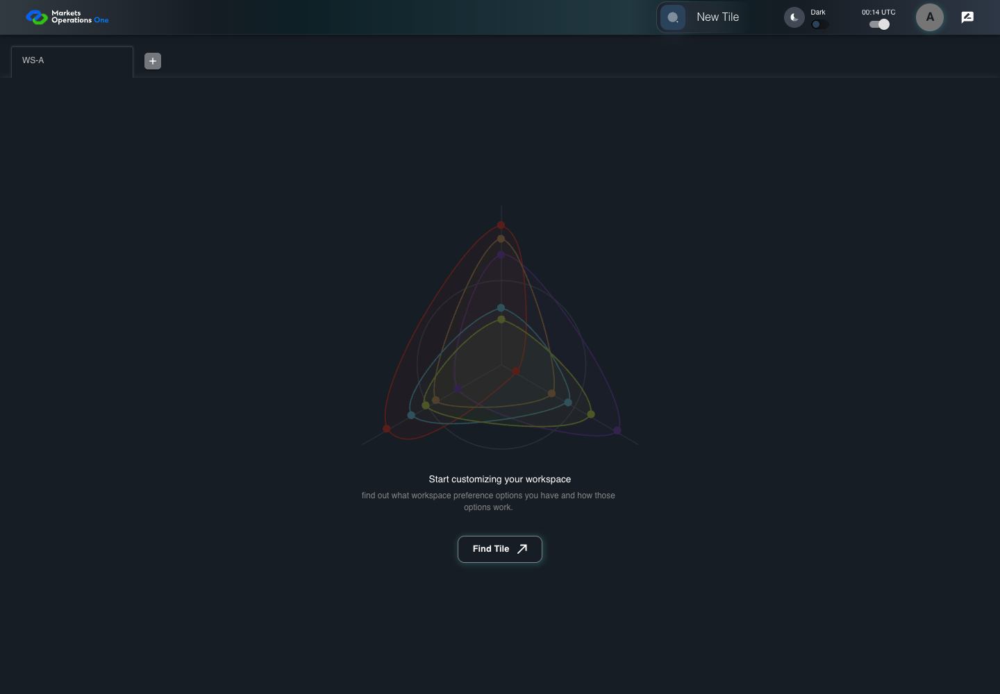

AUTH-044 recovery acquisition timer boundary
PASS · application/run-082/auth-044-recovery-acquisition-timer-boundary-e891b11888e0-attempt-1 · ACTUAL_APPLICATION_LOCAL_SERVICES
Actual MFE; Playwright clock; controlled API responses; unsigned browser-only credentials. No natural lifecycle or BFF expiry claim.
2026-10-22T07:31:10.057Z to 2026-10-22T07:31:11.735Z
Assertions and result · Artifact manifest · Exact run inputs and source hashes
Result SHA-256:0b2f3943e49fa7d7333e792bac781bc41f96d6def747a9ca46f0c5b3fbc1ad0eMachine observations
- session-fixture.json
489ee753775c4ff6de3bb8b0636e5e9960a9ae076518c2ad3dcefc28ae1dba48 - session-observations.json
6342e2f2d6473f304726b90b61d33a46fd4d5668dd8a36edc8b2fbe892aeeffd
Screenshot capture: CAPTURED. Named frames: 9.
Step screenshot bindings: COMPLETE. 8/8 canonical steps have execution screenshots.
Bindings measure structural coverage only. They do not establish screenshot content quality or relevance.
Screenshot content review: CONTEXT_RECORDED. Recorded context: 9/9 frames. Identical image bytes: 7 repeated frames. Recorded context does not establish human visual review.
Canonical step timeline
Given User A is authenticated as user-a in an isolated browser context
Execution: PASSED.
1. step-01 Visible state after step 1: Given User A is authenticated as user-a in an isolated browser context
2026-10-22T07:31:10.877Z · 1440×1000
Step: /Users/lushevol/code/github/ratan-release-impact/workbench/tasks/ui-test-coverage-20261022/test-cases.md:1714
SHA-256:0712c3f55455954e6d35b836023a1f2355851f08e119e269da9cda84dc0bcfd4Captured page: PRIMARY.
Audit metadata — separate from application UI: Controlled time T+0.000s (0 ms); Extend absent; dialog absent; page PRIMARY.
Capture observations — separate from application UI
These values come from the audit harness. They are not pixels or labels added to the application image.
{ "observationsBefore": { "browser": { "nowMs": 1893456000000, "visibility": "visible" }, "session": { "pageLabel": "PRIMARY", "clock": { "mode": "PLAYWRIGHT_CONTROLLED", "originMs": 1893456000000, "nowMs": 1893456000000, "elapsedMs": 0, "accessExpiryMs": 1893456900000, "refreshExpiryMs": null, "cutoffMs": null, "cutoffRemainingMs": null }, "ui": { "dialogVisible": false, "extendVisible": false, "extendEnabled": false, "logoutVisible": false, "logoutEnabled": false }, "state": { "accessPresent": true, "refreshPresent": false, "isOnLogout": false, "isLoading": false } } }, "observationsAfter": { "browser": { "nowMs": 1893456000000, "visibility": "visible" }, "session": { "pageLabel": "PRIMARY", "clock": { "mode": "PLAYWRIGHT_CONTROLLED", "originMs": 1893456000000, "nowMs": 1893456000000, "elapsedMs": 0, "accessExpiryMs": 1893456900000, "refreshExpiryMs": null, "cutoffMs": null, "cutoffRemainingMs": null }, "ui": { "dialogVisible": false, "extendVisible": false, "extendEnabled": false, "logoutVisible": false, "logoutEnabled": false }, "state": { "accessPresent": true, "refreshPresent": false, "isOnLogout": false, "isLoading": false } } } }And the selected fixture tab is labelled "WS-A" inside the tablist named "workspaces" on the Home page
Execution: PASSED.2. step-02 Visible state after step 2: And the selected fixture tab is labelled "WS-A" inside the tablist named "workspaces" on the Home page
2026-10-22T07:31:10.963Z · 1440×1000
Step: /Users/lushevol/code/github/ratan-release-impact/workbench/tasks/ui-test-coverage-20261022/test-cases.md:1715
SHA-256:0712c3f55455954e6d35b836023a1f2355851f08e119e269da9cda84dc0bcfd4Captured page: PRIMARY.
Image bytes match frame 1. An unchanged image can be valid for consecutive assertions. This match does not establish correct step content.
Audit metadata — separate from application UI: Controlled time T+0.000s (0 ms); Extend absent; dialog absent; page PRIMARY.
Capture observations — separate from application UI
These values come from the audit harness. They are not pixels or labels added to the application image.
{ "observationsBefore": { "browser": { "nowMs": 1893456000000, "visibility": "visible" }, "session": { "pageLabel": "PRIMARY", "clock": { "mode": "PLAYWRIGHT_CONTROLLED", "originMs": 1893456000000, "nowMs": 1893456000000, "elapsedMs": 0, "accessExpiryMs": 1893456900000, "refreshExpiryMs": null, "cutoffMs": null, "cutoffRemainingMs": null }, "ui": { "dialogVisible": false, "extendVisible": false, "extendEnabled": false, "logoutVisible": false, "logoutEnabled": false }, "state": { "accessPresent": true, "refreshPresent": false, "isOnLogout": false, "isLoading": false } } }, "observationsAfter": { "browser": { "nowMs": 1893456000000, "visibility": "visible" }, "session": { "pageLabel": "PRIMARY", "clock": { "mode": "PLAYWRIGHT_CONTROLLED", "originMs": 1893456000000, "nowMs": 1893456000000, "elapsedMs": 0, "accessExpiryMs": 1893456900000, "refreshExpiryMs": null, "cutoffMs": null, "cutoffRemainingMs": null }, "ui": { "dialogVisible": false, "extendVisible": false, "extendEnabled": false, "logoutVisible": false, "logoutEnabled": false }, "state": { "accessPresent": true, "refreshPresent": false, "isOnLogout": false, "isLoading": false } } } }And access A expires at controlled time T+900 seconds; no refresh credential exists
Execution: PASSED.
3. step-03 Visible state after step 3: And access A expires at controlled time T+900 seconds; no refresh credential exists
2026-10-22T07:31:11.061Z · 1440×1000
Step: /Users/lushevol/code/github/ratan-release-impact/workbench/tasks/ui-test-coverage-20261022/test-cases.md:1716
SHA-256:0712c3f55455954e6d35b836023a1f2355851f08e119e269da9cda84dc0bcfd4Captured page: PRIMARY.
Image bytes match frame 2. An unchanged image can be valid for consecutive assertions. This match does not establish correct step content.
Audit metadata — separate from application UI: Controlled time T+0.000s (0 ms); Extend absent; dialog absent; page PRIMARY.
Capture observations — separate from application UI
These values come from the audit harness. They are not pixels or labels added to the application image.
{ "observationsBefore": { "browser": { "nowMs": 1893456000000, "visibility": "visible" }, "session": { "pageLabel": "PRIMARY", "clock": { "mode": "PLAYWRIGHT_CONTROLLED", "originMs": 1893456000000, "nowMs": 1893456000000, "elapsedMs": 0, "accessExpiryMs": 1893456900000, "refreshExpiryMs": null, "cutoffMs": null, "cutoffRemainingMs": null }, "ui": { "dialogVisible": false, "extendVisible": false, "extendEnabled": false, "logoutVisible": false, "logoutEnabled": false }, "state": { "accessPresent": true, "refreshPresent": false, "isOnLogout": false, "isLoading": false } } }, "observationsAfter": { "browser": { "nowMs": 1893456000000, "visibility": "visible" }, "session": { "pageLabel": "PRIMARY", "clock": { "mode": "PLAYWRIGHT_CONTROLLED", "originMs": 1893456000000, "nowMs": 1893456000000, "elapsedMs": 0, "accessExpiryMs": 1893456900000, "refreshExpiryMs": null, "cutoffMs": null, "cutoffRemainingMs": null }, "ui": { "dialogVisible": false, "extendVisible": false, "extendEnabled": false, "logoutVisible": false, "logoutEnabled": false }, "state": { "accessPresent": true, "refreshPresent": false, "isOnLogout": false, "isLoading": false } } } }And the browser remains visible without mouse activity
Execution: PASSED.
4. step-04 Visible state after step 4: And the browser remains visible without mouse activity
2026-10-22T07:31:11.134Z · 1440×1000
Step: /Users/lushevol/code/github/ratan-release-impact/workbench/tasks/ui-test-coverage-20261022/test-cases.md:1717
SHA-256:0712c3f55455954e6d35b836023a1f2355851f08e119e269da9cda84dc0bcfd4Captured page: PRIMARY.
Image bytes match frame 3. An unchanged image can be valid for consecutive assertions. This match does not establish correct step content.
Audit metadata — separate from application UI: Controlled time T+0.000s (0 ms); Extend absent; dialog absent; page PRIMARY.
Capture observations — separate from application UI
These values come from the audit harness. They are not pixels or labels added to the application image.
{ "observationsBefore": { "browser": { "nowMs": 1893456000000, "visibility": "visible" }, "session": { "pageLabel": "PRIMARY", "clock": { "mode": "PLAYWRIGHT_CONTROLLED", "originMs": 1893456000000, "nowMs": 1893456000000, "elapsedMs": 0, "accessExpiryMs": 1893456900000, "refreshExpiryMs": null, "cutoffMs": null, "cutoffRemainingMs": null }, "ui": { "dialogVisible": false, "extendVisible": false, "extendEnabled": false, "logoutVisible": false, "logoutEnabled": false }, "state": { "accessPresent": true, "refreshPresent": false, "isOnLogout": false, "isLoading": false } } }, "observationsAfter": { "browser": { "nowMs": 1893456000000, "visibility": "visible" }, "session": { "pageLabel": "PRIMARY", "clock": { "mode": "PLAYWRIGHT_CONTROLLED", "originMs": 1893456000000, "nowMs": 1893456000000, "elapsedMs": 0, "accessExpiryMs": 1893456900000, "refreshExpiryMs": null, "cutoffMs": null, "cutoffRemainingMs": null }, "ui": { "dialogVisible": false, "extendVisible": false, "extendEnabled": false, "logoutVisible": false, "logoutEnabled": false }, "state": { "accessPresent": true, "refreshPresent": false, "isOnLogout": false, "isLoading": false } } } }When the controlled browser clock reaches T+874.999 seconds
Execution: PASSED.
5. step-05 Visible state after step 5: When the controlled browser clock reaches T+874.999 seconds
2026-10-22T07:31:11.330Z · 1440×1000
Step: /Users/lushevol/code/github/ratan-release-impact/workbench/tasks/ui-test-coverage-20261022/test-cases.md:1718
SHA-256:0e29733f1a7dfe6d2dfd23e1d75555a89403200e9ff4a2c8108b345b33c593c4Captured page: PRIMARY.
Audit metadata — separate from application UI: Controlled time T+874.999s (874999 ms); Extend absent; dialog absent; page PRIMARY.
Capture observations — separate from application UI
These values come from the audit harness. They are not pixels or labels added to the application image.
{ "observationsBefore": { "browser": { "nowMs": 1893456874999, "visibility": "visible" }, "session": { "pageLabel": "PRIMARY", "clock": { "mode": "PLAYWRIGHT_CONTROLLED", "originMs": 1893456000000, "nowMs": 1893456874999, "elapsedMs": 874999, "accessExpiryMs": 1893456900000, "refreshExpiryMs": null, "cutoffMs": null, "cutoffRemainingMs": null }, "ui": { "dialogVisible": false, "extendVisible": false, "extendEnabled": false, "logoutVisible": false, "logoutEnabled": false }, "state": { "accessPresent": true, "refreshPresent": false, "isOnLogout": false, "isLoading": false } } }, "observationsAfter": { "browser": { "nowMs": 1893456874999, "visibility": "visible" }, "session": { "pageLabel": "PRIMARY", "clock": { "mode": "PLAYWRIGHT_CONTROLLED", "originMs": 1893456000000, "nowMs": 1893456874999, "elapsedMs": 874999, "accessExpiryMs": 1893456900000, "refreshExpiryMs": null, "cutoffMs": null, "cutoffRemainingMs": null }, "ui": { "dialogVisible": false, "extendVisible": false, "extendEnabled": false, "logoutVisible": false, "logoutEnabled": false }, "state": { "accessPresent": true, "refreshPresent": false, "isOnLogout": false, "isLoading": false } } } }Then the browser records exactly 0 new POST requests to "/api/auth/v2/sso/refreshtoken"
Execution: PASSED.
6. step-06 Visible state after step 6: Then the browser records exactly 0 new POST requests to "/api/auth/v2/sso/refreshtoken"
2026-10-22T07:31:11.394Z · 1440×1000
Step: /Users/lushevol/code/github/ratan-release-impact/workbench/tasks/ui-test-coverage-20261022/test-cases.md:1719
SHA-256:0e29733f1a7dfe6d2dfd23e1d75555a89403200e9ff4a2c8108b345b33c593c4Captured page: PRIMARY.
Image bytes match frame 5. An unchanged image can be valid for consecutive assertions. This match does not establish correct step content.
Audit metadata — separate from application UI: Controlled time T+874.999s (874999 ms); Extend absent; dialog absent; page PRIMARY.
Capture observations — separate from application UI
These values come from the audit harness. They are not pixels or labels added to the application image.
{ "observationsBefore": { "browser": { "nowMs": 1893456874999, "visibility": "visible" }, "session": { "pageLabel": "PRIMARY", "clock": { "mode": "PLAYWRIGHT_CONTROLLED", "originMs": 1893456000000, "nowMs": 1893456874999, "elapsedMs": 874999, "accessExpiryMs": 1893456900000, "refreshExpiryMs": null, "cutoffMs": null, "cutoffRemainingMs": null }, "ui": { "dialogVisible": false, "extendVisible": false, "extendEnabled": false, "logoutVisible": false, "logoutEnabled": false }, "state": { "accessPresent": true, "refreshPresent": false, "isOnLogout": false, "isLoading": false } } }, "observationsAfter": { "browser": { "nowMs": 1893456874999, "visibility": "visible" }, "session": { "pageLabel": "PRIMARY", "clock": { "mode": "PLAYWRIGHT_CONTROLLED", "originMs": 1893456000000, "nowMs": 1893456874999, "elapsedMs": 874999, "accessExpiryMs": 1893456900000, "refreshExpiryMs": null, "cutoffMs": null, "cutoffRemainingMs": null }, "ui": { "dialogVisible": false, "extendVisible": false, "extendEnabled": false, "logoutVisible": false, "logoutEnabled": false }, "state": { "accessPresent": true, "refreshPresent": false, "isOnLogout": false, "isLoading": false } } } }And the tab labelled "WS-A" inside the tablist named "workspaces" on the Home page is visible
Execution: PASSED.
7. step-07 Visible state after step 7: And the tab labelled "WS-A" inside the tablist named "workspaces" on the Home page is visible
2026-10-22T07:31:11.476Z · 1440×1000
Step: /Users/lushevol/code/github/ratan-release-impact/workbench/tasks/ui-test-coverage-20261022/test-cases.md:1720
SHA-256:0e29733f1a7dfe6d2dfd23e1d75555a89403200e9ff4a2c8108b345b33c593c4Captured page: PRIMARY.
Image bytes match frame 6. An unchanged image can be valid for consecutive assertions. This match does not establish correct step content.
Audit metadata — separate from application UI: Controlled time T+874.999s (874999 ms); Extend absent; dialog absent; page PRIMARY.
Capture observations — separate from application UI
These values come from the audit harness. They are not pixels or labels added to the application image.
{ "observationsBefore": { "browser": { "nowMs": 1893456874999, "visibility": "visible" }, "session": { "pageLabel": "PRIMARY", "clock": { "mode": "PLAYWRIGHT_CONTROLLED", "originMs": 1893456000000, "nowMs": 1893456874999, "elapsedMs": 874999, "accessExpiryMs": 1893456900000, "refreshExpiryMs": null, "cutoffMs": null, "cutoffRemainingMs": null }, "ui": { "dialogVisible": false, "extendVisible": false, "extendEnabled": false, "logoutVisible": false, "logoutEnabled": false }, "state": { "accessPresent": true, "refreshPresent": false, "isOnLogout": false, "isLoading": false } } }, "observationsAfter": { "browser": { "nowMs": 1893456874999, "visibility": "visible" }, "session": { "pageLabel": "PRIMARY", "clock": { "mode": "PLAYWRIGHT_CONTROLLED", "originMs": 1893456000000, "nowMs": 1893456874999, "elapsedMs": 874999, "accessExpiryMs": 1893456900000, "refreshExpiryMs": null, "cutoffMs": null, "cutoffRemainingMs": null }, "ui": { "dialogVisible": false, "extendVisible": false, "extendEnabled": false, "logoutVisible": false, "logoutEnabled": false }, "state": { "accessPresent": true, "refreshPresent": false, "isOnLogout": false, "isLoading": false } } } }And the dialog named "Your session has been expired" on the Home page is absent
Execution: PASSED.
8. step-08 Visible state after step 8: And the dialog named "Your session has been expired" on the Home page is absent
2026-10-22T07:31:11.539Z · 1440×1000
Step: /Users/lushevol/code/github/ratan-release-impact/workbench/tasks/ui-test-coverage-20261022/test-cases.md:1721
SHA-256:0e29733f1a7dfe6d2dfd23e1d75555a89403200e9ff4a2c8108b345b33c593c4Captured page: PRIMARY.
Image bytes match frame 7. An unchanged image can be valid for consecutive assertions. This match does not establish correct step content.
Audit metadata — separate from application UI: Controlled time T+874.999s (874999 ms); Extend absent; dialog absent; page PRIMARY.
Capture observations — separate from application UI
These values come from the audit harness. They are not pixels or labels added to the application image.
{ "observationsBefore": { "browser": { "nowMs": 1893456874999, "visibility": "visible" }, "session": { "pageLabel": "PRIMARY", "clock": { "mode": "PLAYWRIGHT_CONTROLLED", "originMs": 1893456000000, "nowMs": 1893456874999, "elapsedMs": 874999, "accessExpiryMs": 1893456900000, "refreshExpiryMs": null, "cutoffMs": null, "cutoffRemainingMs": null }, "ui": { "dialogVisible": false, "extendVisible": false, "extendEnabled": false, "logoutVisible": false, "logoutEnabled": false }, "state": { "accessPresent": true, "refreshPresent": false, "isOnLogout": false, "isLoading": false } } }, "observationsAfter": { "browser": { "nowMs": 1893456874999, "visibility": "visible" }, "session": { "pageLabel": "PRIMARY", "clock": { "mode": "PLAYWRIGHT_CONTROLLED", "originMs": 1893456000000, "nowMs": 1893456874999, "elapsedMs": 874999, "accessExpiryMs": 1893456900000, "refreshExpiryMs": null, "cutoffMs": null, "cutoffRemainingMs": null }, "ui": { "dialogVisible": false, "extendVisible": false, "extendEnabled": false, "logoutVisible": false, "logoutEnabled": false }, "state": { "accessPresent": true, "refreshPresent": false, "isOnLogout": false, "isLoading": false } } } }
Additional named frames

The final visible state after the named test assertions.
2026-10-22T07:31:11.637Z · 1440×1000Step: Test source: /Users/lushevol/code/github/ratan-release-impact/workbench/e2e/audit-specs/session-timing.spec.ts:8
SHA-256:
0e29733f1a7dfe6d2dfd23e1d75555a89403200e9ff4a2c8108b345b33c593c4Captured page: PRIMARY.
Image bytes match frame 8. An unchanged image can be valid for consecutive assertions. This match does not establish correct step content.
Audit metadata — separate from application UI: Controlled time T+874.999s (874999 ms); Extend absent; dialog absent; page PRIMARY.
Capture observations — separate from application UI
These values come from the audit harness. They are not pixels or labels added to the application image.
{
"observationsBefore": {
"browser": {
"nowMs": 1893456874999,
"visibility": "visible"
},
"session": {
"pageLabel": "PRIMARY",
"clock": {
"mode": "PLAYWRIGHT_CONTROLLED",
"originMs": 1893456000000,
"nowMs": 1893456874999,
"elapsedMs": 874999,
"accessExpiryMs": 1893456900000,
"refreshExpiryMs": null,
"cutoffMs": null,
"cutoffRemainingMs": null
},
"ui": {
"dialogVisible": false,
"extendVisible": false,
"extendEnabled": false,
"logoutVisible": false,
"logoutEnabled": false
},
"state": {
"accessPresent": true,
"refreshPresent": false,
"isOnLogout": false,
"isLoading": false
}
}
},
"observationsAfter": {
"browser": {
"nowMs": 1893456874999,
"visibility": "visible"
},
"session": {
"pageLabel": "PRIMARY",
"clock": {
"mode": "PLAYWRIGHT_CONTROLLED",
"originMs": 1893456000000,
"nowMs": 1893456874999,
"elapsedMs": 874999,
"accessExpiryMs": 1893456900000,
"refreshExpiryMs": null,
"cutoffMs": null,
"cutoffRemainingMs": null
},
"ui": {
"dialogVisible": false,
"extendVisible": false,
"extendEnabled": false,
"logoutVisible": false,
"logoutEnabled": false
},
"state": {
"accessPresent": true,
"refreshPresent": false,
"isOnLogout": false,
"isLoading": false
}
}
}
}Screenshots establish visible state only. Assertions and traces support functional claims.